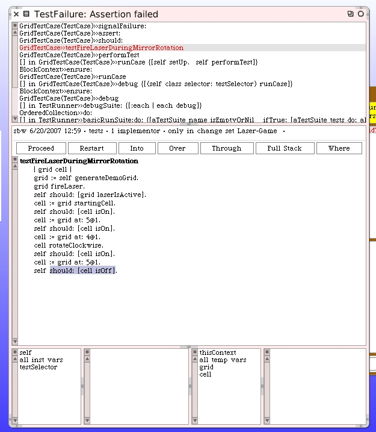
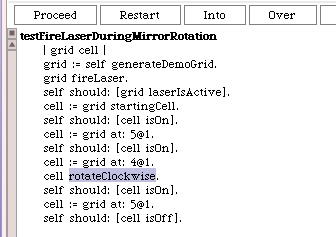
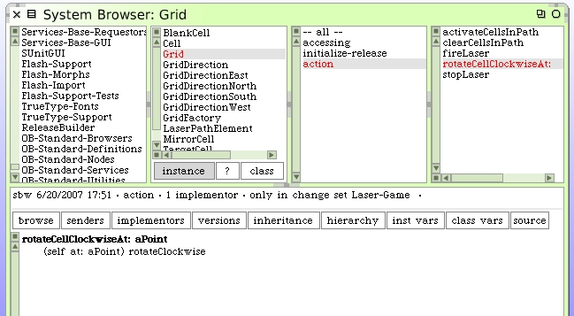
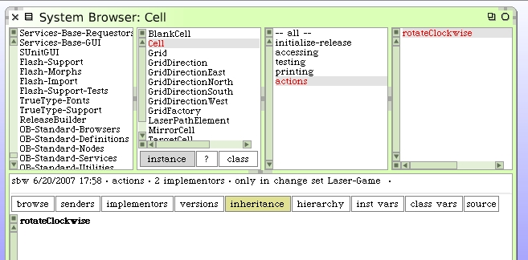
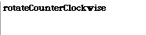
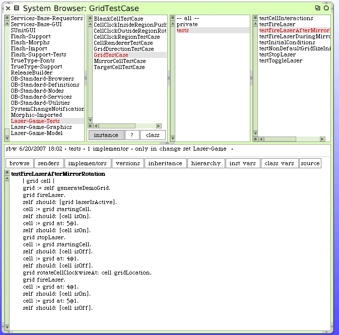

Open the debugger from the unit test runner window.
Restart that method, stepping over intermediate methods with the "Over" button until we get to #rotateClockwise method.
Step "Into" that method. We need to see what's happening when a mirror is rotated while the laser is active.
As you start stepping through the #rotate code you'll realize that all it does it rotate the mirror. There's nothing about the laser's path getting recalculated because the mirror changed state.
The design of a Cell doesn't include any awareness of the Grid. We need to implement cell rotation methods on the grid and have the grid rotate the cell and deal with the consequences of that action. We'll have to write some new methods and do a little refactoring. When we are done all the unit tests should pass. Here's the first new method for our Grid class.
The counter-clockwise method is similar.
rotateCellCounterClockwiseAt: aPoint
(self at: aPoint) rotateCounterClockwise
This does cause us to re-visit the rotate methods we wrote. At this time they only exist on the mirror cells. We can leave those there because they in-fact will be rotated. Since the other cells do not rotate we can implement a simple stub method that does nothing on the generic Cell superclass.
And the counter-clockwise example...
We'll change the two Unit Tests that perform rotation checks of a cell within a grid to that these methods use the new protocol. However, we still need to address the side-effects issues for the grid's other cells before the unit tests are expected to work.
Here's the change to the other test method.
testFireLaserDuringMirrorRotation
| grid cell |
grid := self generateDemoGrid.
grid fireLaser.
self should: [grid laserIsActive].
cell := grid startingCell.
self should: [cell isOn].
cell := grid at: 5@1.
self should: [cell isOn].
cell := grid at: 4@1.
grid rotateCellCounterClockwiseAt: cell gridLocation.
self should: [cell isOn].
cell := grid at: 5@1.
self should: [cell isOff].
Note that we changed this second test a little by sending the rotate counter-clockwise message instead. This should not change the state of the unit test but does cause us to have unit tests for both rotation methods.
Now we go back to our new rotation methods on grid and handle changes to other cells because of the possible state of the laser.
rotateCellClockwiseAt: aPoint
self clearCellsInPath.
(self at: aPoint) rotateClockwise.
self laserIsActive ifTrue: [self activateCellsInPath]
rotateCellCounterClockwiseAt: aPoint
self clearCellsInPath.
(self at: aPoint) rotateCounterClockwise.
self laserIsActive ifTrue: [self activateCellsInPath]
Now when you run the unit tests, everything passes. The next step is to use this same new protocol in the LaserGame morph when we rotate cells.